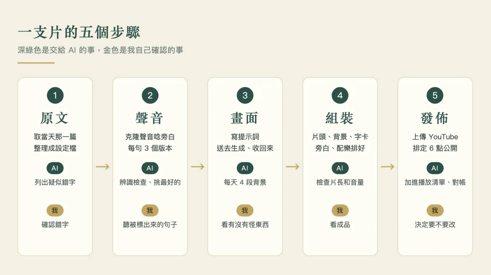
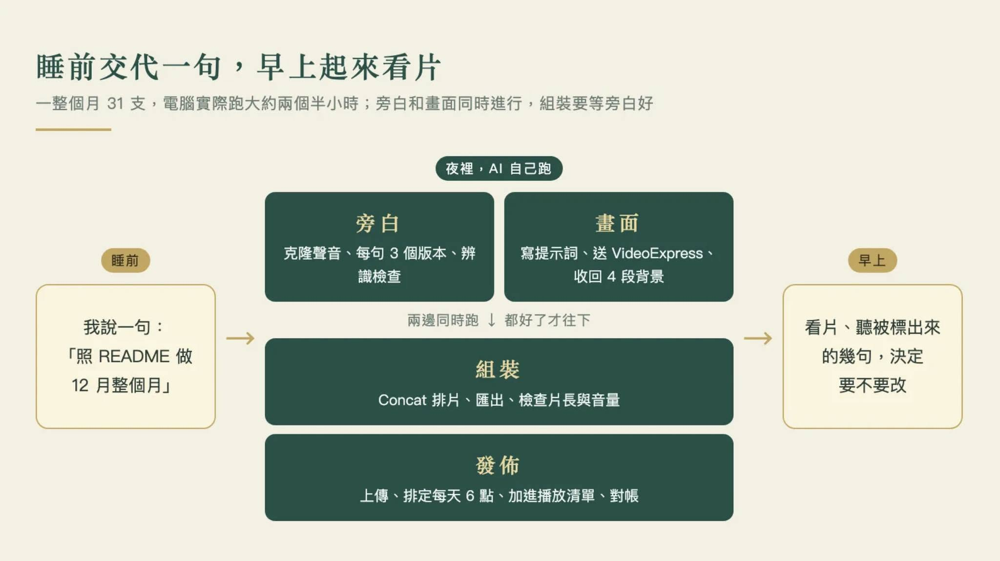

Facebook｜梅驊 Script2Film：AI Agent 影片製作與夜間工作流
來源與工作流
梅驊於 2026-11-21 分享 Script2Film；其公開頁面介紹用 AI agent 從想法或文稿製作旁白、字幕、程式生成的畫面及影片。作者表示核心流程可在個人電腦上執行，選配生成鏡頭及主持人可接外部服務。作者的三種 Agent、四種模型和夜間批次結果屬個案，並非本次實測或效果保證。
官方網站描述 F0 至 F6：安裝檢查、稿件、聲音、對時、畫面、組裝、檢查，另有選用的影片生成、主持人、配樂和上傳。網站報告 27 種場景、15 套色版，但查核時 GitHub 英文 README 頂部仍寫 10 套，正文寫 15 套，兩處不一致，不推斷版本原因。官方稱目前驗證平台是 Apple Silicon Mac，個案為 M3 Max 36GB，不代表其他硬體均支援。


以上兩張是原帖公開壓縮圖片，作者梅驊；未見明顯敏感資料，圖片重用授權未確認。圖中 31 支約兩個半小時與排程是作者案例，不是效能保證。原帖共辨識並檢視六張公開圖片；另四張含人物影片畫面，人物身分與肖像授權未確認，未鏡像。未觀看原作影片。
可見提示詞
原帖夜間流程圖中的完整一句是：「照 README 做 12 月整個月」。這依賴作者原有 README 和資料，不能單獨重現其案例。官方首頁另一個完整示例是：「照文件把 examples/coffee 做成一支片。」本次未見原帖提供更長完整劇本提示詞；Prompt Studio 是產生提示詞的工具，不能把猜測當成作者原文。歸檔文字不代表已執行。
授權、成本與安全
- 專案實際 LICENSE 是 MIT，保留版權及授權聲明，且按原文無擔保。這不等於所有依賴、模型、示例人物、影片或輸出都是 MIT。NOTICE 分別列出 HyperFrames Apache-2.0、Concat AGPL-3.0-or-later、GSAP 的標準授權，以及外部模型和素材條件；部分網站影片與人物圖明示僅供示範、不提供重用。
- 官網稱核心範例無須帳號或 API 金鑰，仍需電腦、下載、電力與可能的 Agent 服務成本；生成鏡頭、主持人、第三方模型及雲端服務可能付費或受地區條款限制，不等於整個工作流免費或離線。
- 作者留言稱自己約以 150 美元購入 VideoExpress lifetime，為其個人經驗。2026-11-23 查核 VideoExpress 官網顯示 Basic 49 美元一次性、All-Access 179 美元一次性及促銷字樣；可能方案與時期不同，不能推定相同產品或結帳價。稅費、限額、公平使用、永久服務及方案資格須於購買前核實；未登入或付款。
- 貼文顯示 videoexpress.al，作者留言另連 videoexpress.ai；兩者網域不同，不應把前者當成官方站。本篇依作者留言及專案官方文件所示 videoexpress.ai 查核。
- 自動生成、瀏覽器已登入工作階段、上傳及排程涉及帳號、個資、費用和外部發布；應最小權限、先用無敏感資料測試，對付費與上傳保留人工核准。複製聲音或人物前取得當事人同意，並檢查素材和生成結果權利。
- 本次只讀公開資料，沒有安裝、執行專案、登入、授權或付款，也未作安全稽核。
原始連結
使用者分享：https://www.facebook.com/share/p/1F2iQgupEb/?mibextid=wwXIfr
貼文辨識網址：https://www.facebook.com/story.php?story_fbid=10163735486297469&id=527652468
專案官網：https://notoriouslab.github.io/script2film/
Prompt Studio：https://notoriouslab.github.io/script2film/studio.html
GitHub：https://github.com/notoriouslab/script2film
查核 commit：https://github.com/notoriouslab/script2film/tree/bee34c0b443309969dc02b64a0c2be680b207e52
授權與第三方素材：https://github.com/notoriouslab/script2film/blob/bee34c0b443309969dc02b64a0c2be680b207e52/NOTICE.md
VideoExpress 官方價格頁：https://videoexpress.ai/